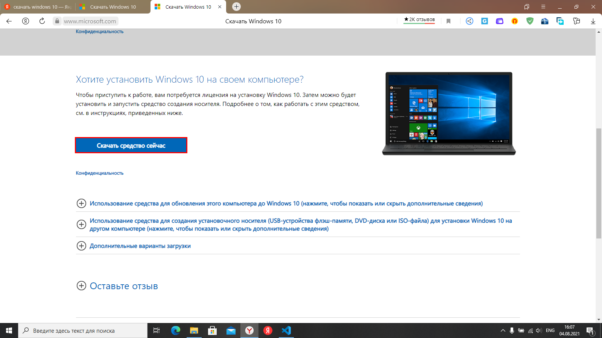
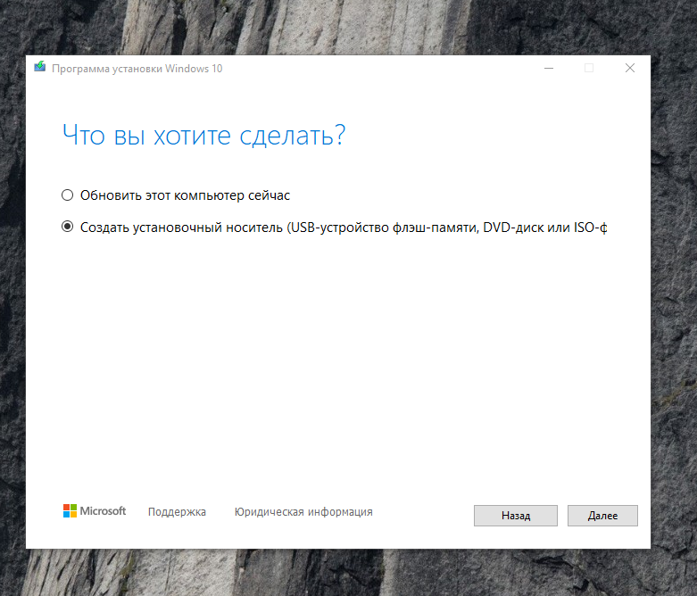
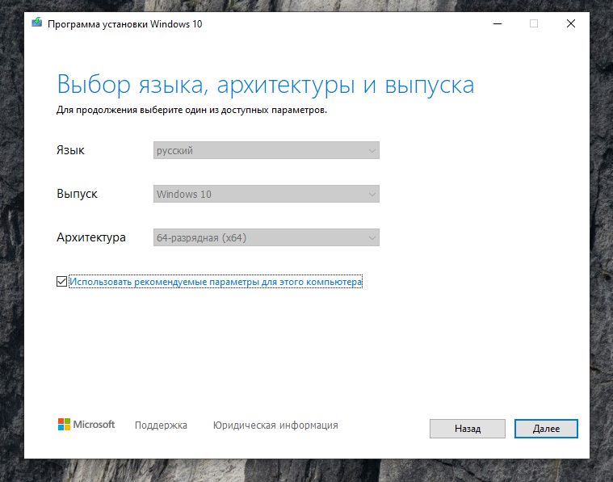
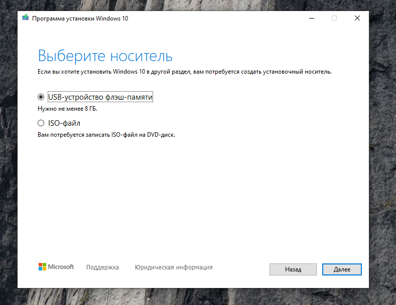

Скачиваем ISO образ с сайта microsoft.
Если установленная система Windows, будет предложено скачать средство создания загружечных носителей.
Скачиваем и устанавливаем его.
Выбираем пункт "Создать установочный носитель "
Выбираем язык и архитектуру
Выбираем записывать ли сразу на флешку или просто создать ISO образ.
После создания носителя настраиваем порядок загрузки в BIOS и начинаем установку.
Выбираем язык системы, региональные форматы и раскладку клавиатуры.

Нажимаем установить.

Вводим ключ или выбираем "У меня нет ключа продукта".

Выбираем версию Windows, если не было ключа.

Принимаем лицензионное соглашение.

Выбираем выборочную установку, для чистой установки Windows .

Размечаем диск или даём Windows это сделать, указав место установки.

Ждем завершения установки.

Ждем завершения.
После установки следует начальная настройка Windows.
Выбираем свой регион.

Выбираем раскладку клавиатуры и добавляем вторую, если нужно.


Далее следует выбрать где будет использоваться компьютер для дома или организации.

Добавление учетной записи.
Выбираем автономную учетную запись


Вводим имя пользователя, пароль и подтверждаем его.


Контрольные вопросы для востановления учетной записи в случае потери пароля.

Отправлять данные о местоположении.

Разрешить поиск устройства

Какие данные отпправлять в microsoft и разрешения для приложений.


Настройка Microsoft Edge